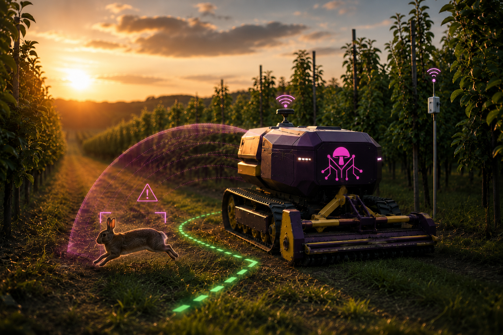
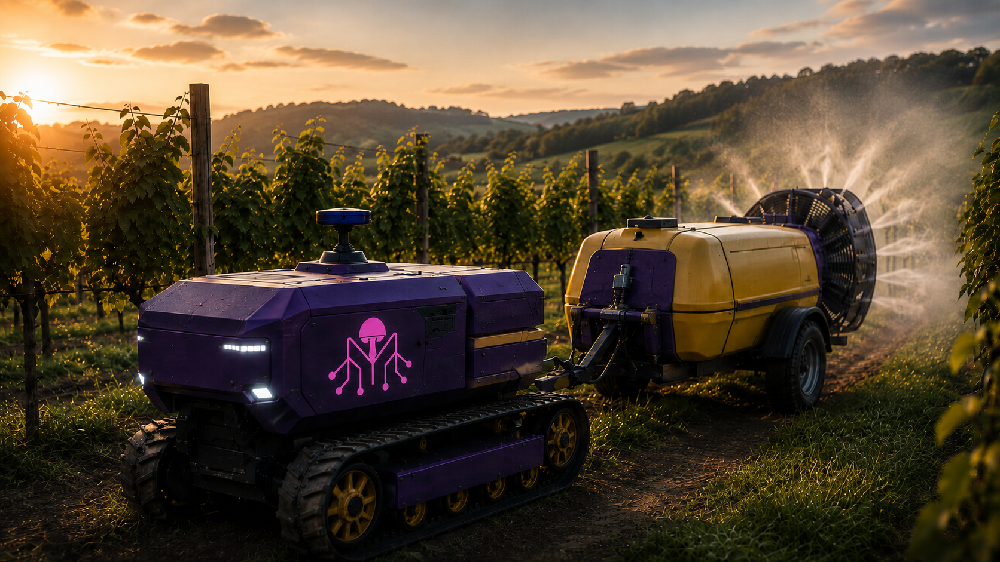
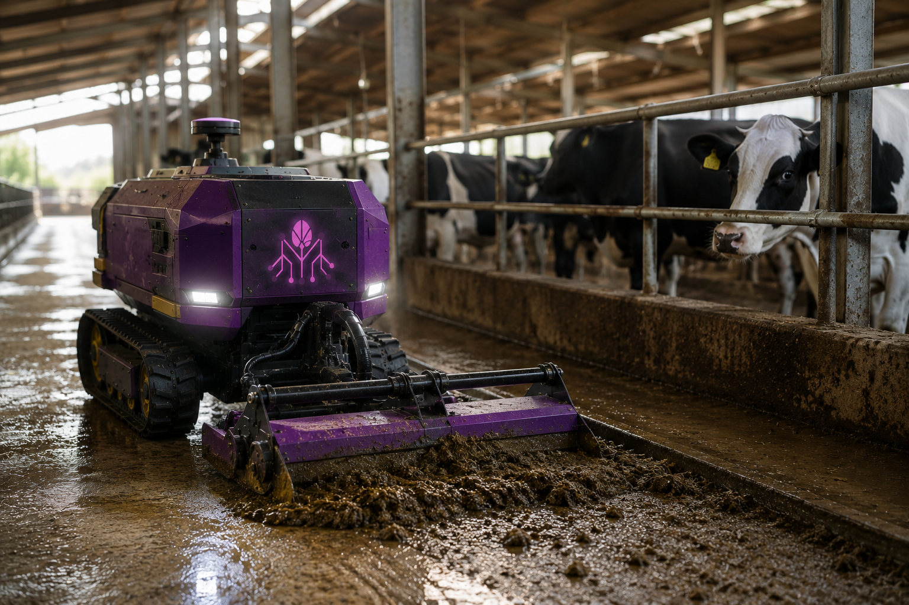
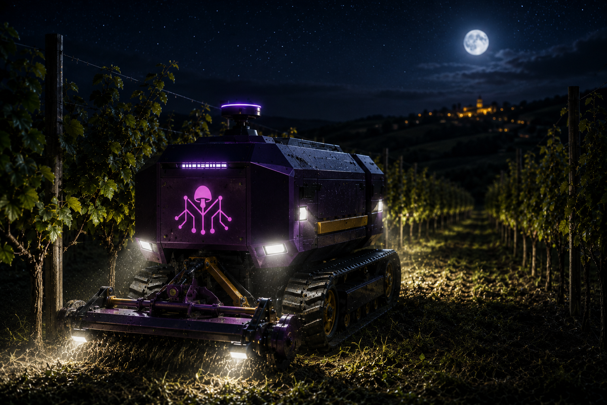
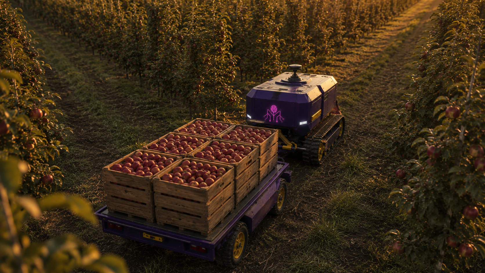
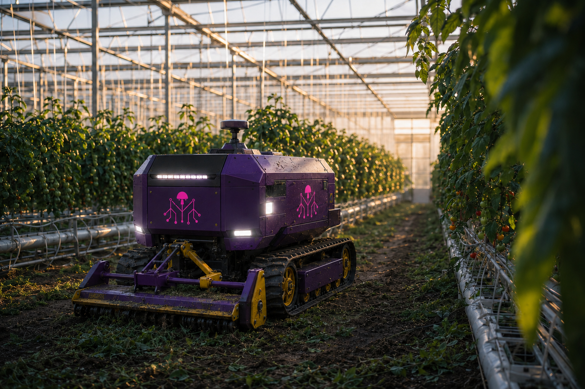
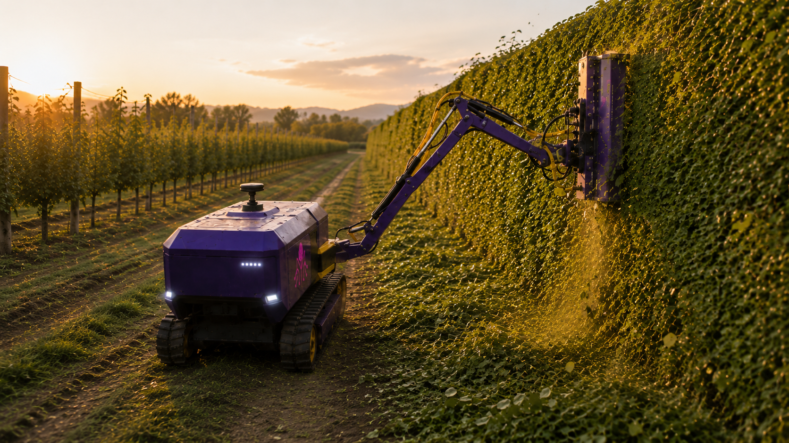
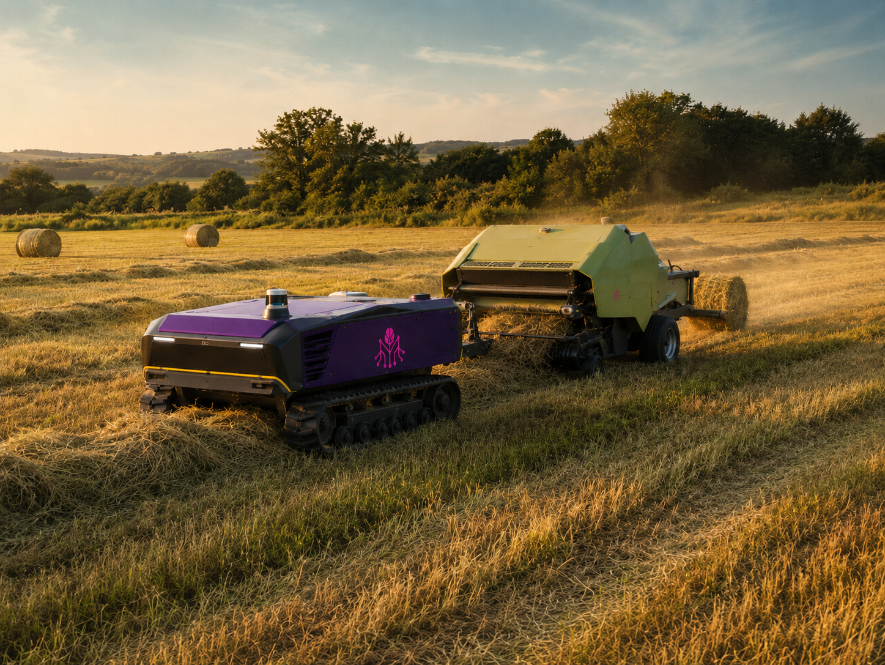
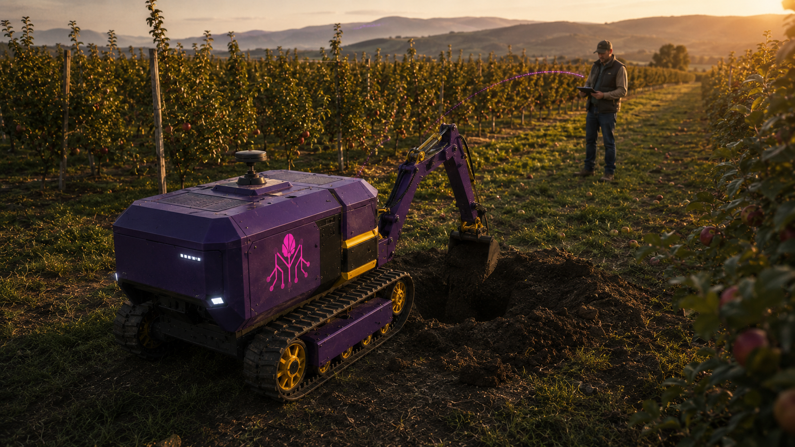
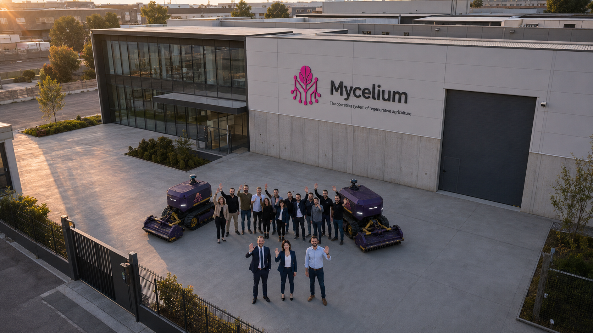

01
 MYCELIUM
MYCELIUM

Il sistema operativo dell'agricoltura rigenerativa.
marchio © copyright Mycelium Lab s.r.l. — rights reserved — P.IVA 04262350368
Tocca i nodi viola per esplorare ogni caratteristica.

Clicca i pallini magenta intorno all'immagine per scoprire le specifiche di Mycelium.
Un Mycelium gestisce tranquillamente 10 ettari in 24/7 con una sola ricarica (10h), si ricarica da solo e torna a lavorare.
25 CV di potenza elettrica continuativa, finemente regolabile e silenziosa anche per il lavoro notturno. Affronta pendenze fino al 35%.
Autonomo o da radiocomando. Sensori e telecamere a 360° per navigazione e anti-collisione. Aggancio automatico degli attrezzi e rifornimento serbatoi automatico.
Compatibile con tutti gli attrezzi: attacco standard ISO 500 e sollevatore idraulico CAT I/II da 1 t di serie. Attacco 3 punti con sollevatore frontale in optional, come pala e bulldozer. Connessione ISOBUS e box di distribuzione idraulico di serie.
Tutto come il tuo trattore. Fornisce energia elettrica 230 V∼c 32 A, gestisce il quaderno di campagna e produce report utili sullo stato di salute di piante e animali.
Lunghezza 2,6 m, altezza 1,4 m, con carreggiata regolabile da 0,75 a 1,3 m.
Osserva ed elabora dati confrontandoli con meteo e storico. Fornisce suggerimenti e ottimizza le operazioni per maggiore produttività e minor costo.
Payback in meno di 2 anni. Risparmio operativo -25 €/h.
5 anni. Servizi di assistenza e ricambi a domicilio entro 48 h. Noleggio flotta a 100 €/h cadauno.
95.000 € rateizzabile. Include il tool e la stazione di ricarica.
Scorri per esplorare i contesti operativi di Mycelium.











Mycelium Lab s.r.l. — sito produttivo in Viale Virgilio 50, 41123 Modena.
Oppure richiedi una demo: indicaci dove e veniamo a mostrartelo in azione.
Mycelium nasce dall'incontro tra chi vive l'agricoltura ogni giorno e chi progetta tecnologie per renderla più autonoma, sostenibile e accessibile.
Emanuele porta l'esperienza diretta del campo. Federico porta competenze in elettrificazione e sistemi industriali. Qiuting aggiunge la dimensione software e digitale.
Insieme sviluppano una piattaforma autonoma, elettrica e connessa per ridurre il lavoro manuale, aumentare l'efficienza operativa e migliorare la qualità della vita di agricoltori, piante e animali.

Mycelium nasce per accelerare la transizione verso un'agricoltura rigenerativa, autonoma e accessibile. Sviluppiamo una piattaforma elettrica, modulare e connessa pensata per superare i limiti dell'agricoltura basata su grandi macchine, monoculture e processi rigidi. Il nostro obiettivo è restituire agli agricoltori libertà operativa, flessibilità e controllo, rendendo l'automazione disponibile anche per aziende agricole piccole e medie.
Mycelium è progettato per lavorare in modo continuo, efficiente e a basso impatto all'interno di ecosistemi agricoli complessi, dove colture, suolo, animali, dati ed energia fanno parte dello stesso sistema. Supporta pratiche come permacultura, agricoltura sintropica, lavorazioni leggere e interventi selettivi, riducendo input, compattamento, emissioni e dipendenza operativa.
La nostra visione è costruire il sistema operativo dell'agricoltura rigenerativa: una rete di piccoli nodi intelligenti, elettrici e collaborativi, capaci di operare nel paesaggio agricolo senza dominarlo. Come il micelio connette gli ecosistemi naturali, Mycelium connette agricoltori, macchine, dati, energia e tecnologie in un'infrastruttura distribuita, adattabile e resiliente.
Crediamo in un modello aperto, indipendente e in continua evoluzione. MyceliumOS nasce come ecosistema open source, sviluppato insieme agli agricoltori attraverso una membership aperta, per ridurre la dipendenza da sistemi chiusi e grandi corporation agritech. L'innovazione deve restare vicina al campo, verificabile nell'uso reale e guidata dai bisogni di chi lavora la terra.
Mycelium non è solo una macchina: è un'infrastruttura tecnologica per rendere l'agricoltura più autonoma, inclusiva e sostenibile nel lungo periodo — capace di rigenerare suolo, biodiversità, produttività e tempo per gli agricoltori.